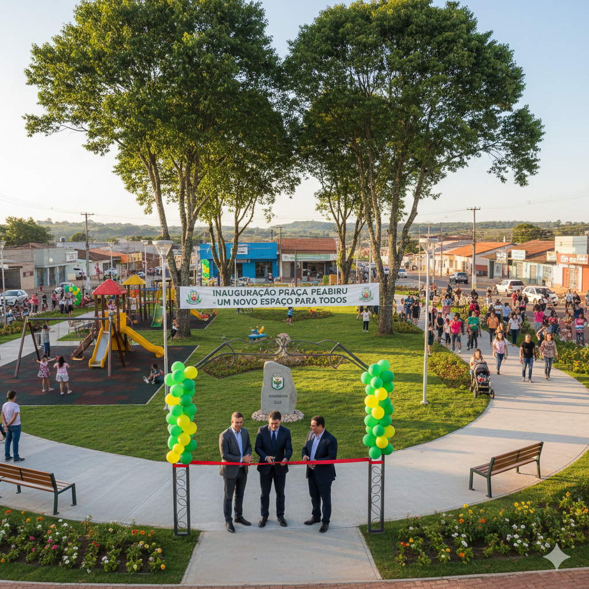

Peabiru · Cidade
Nova praça é inaugurada no centro da cidade de Peabiru
Espaço conta com área verde, playground e pista de caminhada.
Um olhar atento para o que está perto.
As mudanças na sua cidade, os assuntos do bairro e tudo o que acontece perto de você.

Espaço conta com área verde, playground e pista de caminhada.

Prefeitura orienta motoristas a utilizarem rotas alternativas.
Defesa Civil permanece em alerta e monitora áreas de risco.
Continue explorando os assuntos da nossa região.
Acompanhar política